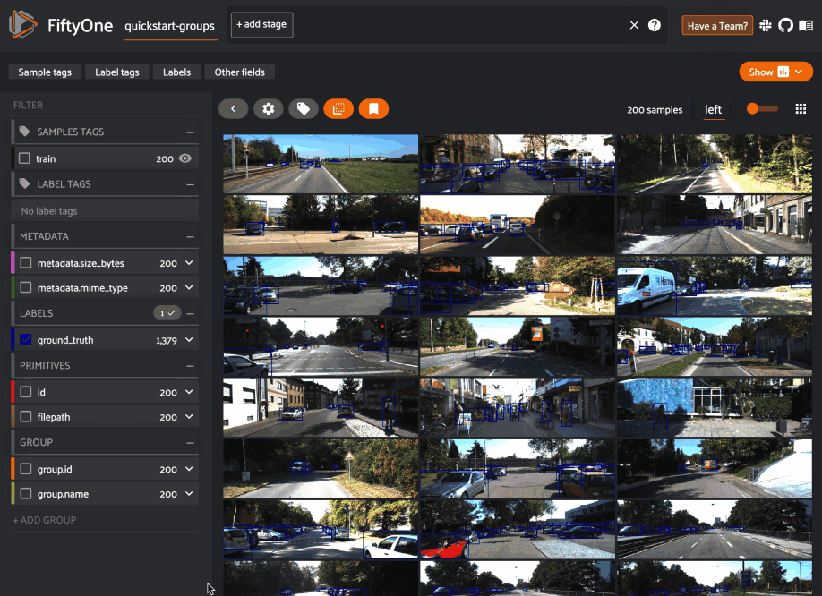

Grouped datasets¶
FiftyOne supports the creation of grouped datasets, which contain multiple slices of samples of possibly different modalities (e.g., image, video, or 3D scenes) that are organized into groups.
Grouped datasets can be used to represent multiview scenes, where data for multiple perspectives of the same scene can be stored, visualized, and queried in ways that respect the relationships between the slices of data.
Note
Did you know? You can also create dynamic group views into your datasets based on a field or expression of interest.
Overview¶
In this section, we’ll cover the basics of creating and working with grouped datasets via Python.
Let’s start by creating some test data. We’ll use the quickstart dataset to construct some mocked triples of left/center/right images:
import fiftyone as fo
import fiftyone.utils.random as four
import fiftyone.zoo as foz
groups = ["left", "center", "right"]
d = foz.load_zoo_dataset("quickstart")
four.random_split(d, {g: 1 / len(groups) for g in groups})
filepaths = [d.match_tags(g).values("filepath") for g in groups]
filepaths = [dict(zip(groups, fps)) for fps in zip(*filepaths)]
print(filepaths[:2])
[
{
'left': '~/fiftyone/quickstart/data/000880.jpg',
'center': '~/fiftyone/quickstart/data/002799.jpg',
'right': '~/fiftyone/quickstart/data/001599.jpg',
},
{
'left': '~/fiftyone/quickstart/data/003344.jpg',
'center': '~/fiftyone/quickstart/data/001057.jpg',
'right': '~/fiftyone/quickstart/data/001430.jpg',
},
]
Creating grouped datasets¶
To create a grouped dataset, simply use
add_group_field() to
declare a Group field on your dataset before you add samples to it:
dataset = fo.Dataset("groups-overview")
dataset.add_group_field("group", default="center")
The optional default parameter specifies the slice of samples that will be
returned via the API or visualized in the App’s grid view by default. If you
don’t specify a default, one will be inferred from the first sample you add to
the dataset.
Note
Datasets may contain only one Group field.
Adding samples¶
To populate a grouped dataset with samples, create a single Group instance
for each group of samples and use
Group.element() to generate values
for the group field of each Sample object in the group based on their slice’s
name. The Sample objects can then simply be added to the dataset as usual:
samples = []
for fps in filepaths:
group = fo.Group()
for name, filepath in fps.items():
sample = fo.Sample(filepath=filepath, group=group.element(name))
samples.append(sample)
dataset.add_samples(samples)
print(dataset)
Name: groups-overview
Media type: group
Group slice: center
Num groups: 66
Persistent: False
Tags: []
Sample fields:
id: fiftyone.core.fields.ObjectIdField
filepath: fiftyone.core.fields.StringField
tags: fiftyone.core.fields.ListField(fiftyone.core.fields.StringField)
metadata: fiftyone.core.fields.EmbeddedDocumentField(fiftyone.core.metadata.Metadata)
created_at: fiftyone.core.fields.DateTimeField
last_modified_at: fiftyone.core.fields.DateTimeField
group: fiftyone.core.fields.EmbeddedDocumentField(fiftyone.core.groups.Group)
Note
Every sample in a grouped dataset must have its group field populated with
a Group element.
Dataset properties¶
Grouped datasets have a media_type of "group":
print(dataset.media_type)
# group
The group_field property
contains the name of the Group field storing the dataset’s group membership
information:
print(dataset.group_field)
# group
The group_slices property
contains the names of all group slices in the dataset:
print(dataset.group_slices)
# ['left', 'center', 'right']
The group_media_types
property is a dict mapping each slice name to its corresponding media type:
print(dataset.group_media_types)
# {'left': 'image', 'center': 'image', 'right': 'image'}
The list of group slices and their corresponding media types are dynamically expanded as you add samples to a grouped dataset.
Note
Grouped datasets may contain a mix of different modalities (e.g., images, videos, and 3D scenes), but FiftyOne strictly enforces that each slice of a grouped dataset must have a homogeneous media type.
For example, you would see an error if you tried to add a video sample to
the left slice of the above dataset, since it contains images.
The default_group_slice
property stores the name of the default group slice:
print(dataset.default_group_slice)
# center
The default group slice controls the slice of samples that will be returned via the API—for example when you directly iterate over the dataset—or visualized in the App’s grid view by default:
print(dataset.first())
<Sample: {
'id': '62db2ce147e9efc3615cd450',
'media_type': 'image',
'filepath': '~/fiftyone/quickstart/data/003344.jpg',
'tags': [],
'metadata': None,
'created_at': datetime.datetime(2024, 7, 22, 5, 16, 10, 701907),
'last_modified_at': datetime.datetime(2024, 7, 22, 5, 16, 10, 701907),
'group': <Group: {'id': '62db2ce147e9efc3615cd346', 'name': 'center'}>,
}>
You can change the active group slice in your current session by setting the
group_slice property:
dataset.group_slice = "left"
print(dataset.first())
<Sample: {
'id': '62db2ce147e9efc3615cd44e',
'media_type': 'image',
'filepath': '~/fiftyone/quickstart/data/001599.jpg',
'tags': [],
'metadata': None,
'created_at': datetime.datetime(2024, 7, 22, 5, 16, 10, 701907),
'last_modified_at': datetime.datetime(2024, 7, 22, 5, 16, 10, 701907),
'group': <Group: {'id': '62db2ce147e9efc3615cd346', 'name': 'left'}>,
}>
You can reset the active group slice to the default value by setting
group_slice to None:
# Resets to `default_group_slice`
dataset.group_slice = None
You can also change the default group slice at any time by setting the
default_group_slice
property.
Adding fields¶
You are free to add arbitrary sample- and frame-level fields to your grouped datasets just as you would with ungrouped datasets:
sample = dataset.first()
sample["int_field"] = 51
sample["ground_truth"] = fo.Classification(label="outdoor")
sample.save()
You can also use methods like
set_values()
and save() to perform bulk
edits to the active slice of a grouped
dataset.
Note that all slices of a grouped dataset share the same schema, and hence any fields you add to samples from a particular slice will be implicitly declared on all samples from that slice and all other slices:
print(dataset)
Name: groups-overview
Media type: group
Group slice: center
Num groups: 66
Persistent: False
Tags: []
Sample fields:
id: fiftyone.core.fields.ObjectIdField
filepath: fiftyone.core.fields.StringField
tags: fiftyone.core.fields.ListField(fiftyone.core.fields.StringField)
metadata: fiftyone.core.fields.EmbeddedDocumentField(fiftyone.core.metadata.Metadata)
created_at: fiftyone.core.fields.DateTimeField
last_modified_at: fiftyone.core.fields.DateTimeField
group: fiftyone.core.fields.EmbeddedDocumentField(fiftyone.core.groups.Group)
int_field: fiftyone.core.fields.IntField
ground_truth: fiftyone.core.fields.EmbeddedDocumentField(fiftyone.core.labels.Classification)
Note
Like ungrouped datasets, any fields in a grouped dataset’s schema that have
not been explicitly set on a Sample in the dataset will be None.
You can use methods like
clone_sample_field(),
rename_sample_field(),
delete_sample_field(),
clear_sample_field(),
and keep_fields() to
perform batch edits to the fields across all slices of a grouped dataset.
Accessing samples¶
You can access a sample from any slice of grouped dataset via its ID or filepath:
# Grab a random sample across all slices
sample = dataset.select_group_slices().shuffle().first()
# Directly lookup same sample by ID
also_sample = dataset[sample.id]
In addition, you can also use
get_group() to retrieve a
dict containing all samples in a group with a given ID:
# Grab a random group ID
sample = dataset.shuffle().first()
group_id = sample.group.id
group = dataset.get_group(group_id)
print(group)
{
'left': <Sample: {
'id': '62f810ba59e644568f229dac',
'media_type': 'image',
'filepath': '~/fiftyone/quickstart/data/001227.jpg',
'tags': [],
'metadata': None,
'created_at': datetime.datetime(2024, 7, 22, 5, 16, 10, 701907),
'last_modified_at': datetime.datetime(2024, 7, 22, 5, 16, 10, 701907),
'group': <Group: {'id': '62f810ba59e644568f229c62', 'name': 'left'}>,
}>,
'center': <Sample: {
'id': '62f810ba59e644568f229dad',
'media_type': 'image',
'filepath': '~/fiftyone/quickstart/data/004172.jpg',
'tags': [],
'metadata': None,
'created_at': datetime.datetime(2024, 7, 22, 5, 16, 10, 701907),
'last_modified_at': datetime.datetime(2024, 7, 22, 5, 16, 10, 701907),
'group': <Group: {'id': '62f810ba59e644568f229c62', 'name': 'center'}>,
}>,
'right': <Sample: {
'id': '62f810ba59e644568f229dae',
'media_type': 'image',
'filepath': '~/fiftyone/quickstart/data/000594.jpg',
'tags': [],
'metadata': None,
'created_at': datetime.datetime(2024, 7, 22, 5, 16, 10, 701907),
'last_modified_at': datetime.datetime(2024, 7, 22, 5, 16, 10, 701907),
'group': <Group: {'id': '62f810ba59e644568f229c62', 'name': 'right'}>,
}>,
}
Deleting samples¶
Like ungrouped datasets, you can use
delete_samples() to
delete individual sample(s) from a grouped dataset:
# Grab a random sample across all slices
sample = dataset.select_group_slices().shuffle().first()
dataset.delete_samples(sample)
In addition, you can use
delete_groups() to delete
all samples in a specific group(s):
# Continuing from above, delete the rest of the group
group_id = sample.group.id
dataset.delete_groups(group_id)
You can also use methods like
clear() and
keep() to perform batch edits to
the groups in a grouped dataset.
Iterating over grouped datasets¶
When you directly iterate over a grouped dataset, you will get samples from the dataset’s active slice:
print(dataset.group_slice)
# center
for sample in dataset:
pass
print(sample)
<Sample: {
'id': '62f10dbb68f4ed13eba7c5e7',
'media_type': 'image',
'filepath': '~/fiftyone/quickstart/data/001394.jpg',
'tags': [],
'metadata': None,
'created_at': datetime.datetime(2024, 7, 22, 5, 16, 10, 701907),
'last_modified_at': datetime.datetime(2024, 7, 22, 5, 16, 10, 701907),
'group': <Group: {'id': '62f10dbb68f4ed13eba7c4a0', 'name': 'center'}>,
}>
Note
You can customize the dataset’s active slice by setting the
group_slice property to
another slice name.
You can also use
iter_groups() to iterate
over dicts containing all samples in each group:
for group in dataset.iter_groups():
pass
print(group)
{
'left': <Sample: {
'id': '62f10dbb68f4ed13eba7c5e6',
'media_type': 'image',
'filepath': '~/fiftyone/quickstart/data/002538.jpg',
'tags': [],
'metadata': None,
'created_at': datetime.datetime(2024, 7, 22, 5, 16, 10, 701907),
'last_modified_at': datetime.datetime(2024, 7, 22, 5, 16, 10, 701907),
'group': <Group: {'id': '62f10dbb68f4ed13eba7c4a0', 'name': 'left'}>,
}>,
'center': <Sample: {
'id': '62f10dbb68f4ed13eba7c5e7',
'media_type': 'image',
'filepath': '~/fiftyone/quickstart/data/001394.jpg',
'tags': [],
'metadata': None,
'created_at': datetime.datetime(2024, 7, 22, 5, 16, 10, 701907),
'last_modified_at': datetime.datetime(2024, 7, 22, 5, 16, 10, 701907),
'group': <Group: {'id': '62f10dbb68f4ed13eba7c4a0', 'name': 'center'}>,
}>,
'right': <Sample: {
'id': '62f10dbb68f4ed13eba7c5e8',
'media_type': 'image',
'filepath': '~/fiftyone/quickstart/data/000020.jpg',
'tags': [],
'metadata': None,
'created_at': datetime.datetime(2024, 7, 22, 5, 16, 10, 701907),
'last_modified_at': datetime.datetime(2024, 7, 22, 5, 16, 10, 701907),
'group': <Group: {'id': '62f10dbb68f4ed13eba7c4a0', 'name': 'right'}>,
}>,
}
Example datasets¶
The FiftyOne Dataset Zoo contains grouped datasets that you can use out-of-the-box to test drive FiftyOne’s group-related features.
Quickstart groups¶
The fastest way to get started is by loading the quickstart-groups dataset, which consists of 200 scenes from the train split of the KITTI dataset, each containing left camera, right camera, point cloud, and 2D/3D object annotation data:
import fiftyone as fo
import fiftyone.zoo as foz
dataset = foz.load_zoo_dataset("quickstart-groups")
print(dataset.group_media_types)
# {'left': 'image', 'right': 'image', 'pcd': '3d'}
print(dataset)
Name: quickstart-groups
Media type: group
Group slice: left
Num groups: 200
Persistent: False
Tags: []
Sample fields:
id: fiftyone.core.fields.ObjectIdField
filepath: fiftyone.core.fields.StringField
tags: fiftyone.core.fields.ListField(fiftyone.core.fields.StringField)
metadata: fiftyone.core.fields.EmbeddedDocumentField(fiftyone.core.metadata.Metadata)
created_at: fiftyone.core.fields.DateTimeField
last_modified_at: fiftyone.core.fields.DateTimeField
group: fiftyone.core.fields.EmbeddedDocumentField(fiftyone.core.groups.Group)
ground_truth: fiftyone.core.fields.EmbeddedDocumentField(fiftyone.core.labels.Detections)
KITTI multiview¶
You can also load the full kitti-multiview dataset:
import fiftyone as fo
import fiftyone.zoo as foz
dataset = foz.load_zoo_dataset("kitti-multiview", split="train")
Toy dataset¶
The snippet below generates a toy dataset containing 3D cuboids filled with points that demonstrates how 3D detections are represented:
import fiftyone as fo
import numpy as np
import open3d as o3d
detections = []
point_cloud = []
for _ in range(10):
dimensions = np.random.uniform([1, 1, 1], [3, 3, 3])
location = np.random.uniform([-10, -10, 0], [10, 10, 10])
rotation = np.random.uniform(-np.pi, np.pi, size=3)
detection = fo.Detection(
dimensions=list(dimensions),
location=list(location),
rotation=list(rotation),
)
detections.append(detection)
R = o3d.geometry.get_rotation_matrix_from_xyz(rotation)
points = np.random.uniform(-dimensions / 2, dimensions / 2, size=(1000, 3))
points = points @ R.T + location[np.newaxis, :]
point_cloud.extend(points)
pc = o3d.geometry.PointCloud()
pc.points = o3d.utility.Vector3dVector(np.array(point_cloud))
o3d.io.write_point_cloud("/tmp/toy.pcd", pc)
scene = fo.Scene()
scene.add(fo.PointCloud("point cloud", "/tmp/toy.pcd"))
scene.write("/tmp/toy.fo3d")
group = fo.Group()
samples = [
fo.Sample(
filepath="/tmp/toy.png", # non-existent
group=group.element("image"),
),
fo.Sample(
filepath="/tmp/toy.fo3d",
group=group.element("pcd"),
detections=fo.Detections(detections=detections),
)
]
dataset = fo.Dataset()
dataset.add_samples(samples)
dataset.app_config.plugins["3d"] = {
"defaultCameraPosition": {"x": 0, "y": 0, "z": 20}
}
dataset.save()
session = fo.launch_app(dataset)

Grouped views¶
You have the entire dataset view language at your disposal to sort, slice, and search your grouped datasets!
Basics¶
You can perform simple operations like shuffling and limiting grouped datasets:
# Select 10 random groups from the dataset
view = dataset.shuffle().limit(10)
print(view)
Dataset: groups-overview
Media type: group
Group slice: center
Num groups: 10
Group fields:
id: fiftyone.core.fields.ObjectIdField
filepath: fiftyone.core.fields.StringField
tags: fiftyone.core.fields.ListField(fiftyone.core.fields.StringField)
metadata: fiftyone.core.fields.EmbeddedDocumentField(fiftyone.core.metadata.Metadata)
created_at: fiftyone.core.fields.DateTimeField
last_modified_at: fiftyone.core.fields.DateTimeField
group: fiftyone.core.fields.EmbeddedDocumentField(fiftyone.core.groups.Group)
View stages:
1. Shuffle(seed=None)
2. Limit(limit=10)
As you can see, the basic properties of grouped datasets carry over to views into them:
print(view.media_type)
# group
print(view.group_slice)
# center
print(view.group_media_types)
# {'left': 'image', 'center': 'image', 'right': 'image'}
You can also perform all the usual operations on grouped views, such as accessing samples, and iterating over them:
for group in view.iter_groups():
pass
sample = view.last()
print(sample)
group_id = sample.group.id
group = view.get_group(group_id)
print(group)
Filtering¶
You can write views that match and filter the contents of grouped datasets:
import fiftyone as fo
import fiftyone.zoo as foz
from fiftyone import ViewField as F
dataset = foz.load_zoo_dataset("quickstart-groups")
print(dataset.group_slice)
# left
# Filters based on the content in the 'left' slice
view = (
dataset
.match_tags("train")
.filter_labels("ground_truth", F("label") == "Pedestrian")
)
Remember that, just as when iterating over grouped datasets, any filtering operations will only be applied to the active slice.
However, you can write views that reference specific slice(s) of a grouped
collection via the special "groups.<slice>.field.name" syntax:
from fiftyone import ViewField as F
dataset.compute_metadata()
# Match groups whose `left` image has a height of at least 640 pixels and
# whose `right` image has a height of at most 480 pixels
view = dataset.match(
(F("groups.left.metadata.height") >= 640)
& (F("groups.right.metadata.height") <= 480)
)
print(view)
Selecting groups¶
You can use
select_groups()
to create a view that contains certain group(s) of interest by their IDs:
# Select two groups at random
view = dataset.take(2)
group_ids = view.values("group.id")
# Select the same groups (default: unordered)
same_groups = dataset.select_groups(group_ids)
assert set(view.values("id")) == set(same_groups.values("id"))
# Select the same groups (ordered)
same_order = dataset.select_groups(group_ids, ordered=True)
assert view.values("id") == same_order.values("id")
Excluding groups¶
You can use
exclude_groups()
to create a view that excludes certain group(s) of interest by their IDs:
# Exclude two groups at random
view = dataset.take(2)
group_ids = view.values("group.id")
other_groups = dataset.exclude_groups(group_ids)
assert len(set(group_ids) & set(other_groups.values("group.id"))) == 0
Selecting slices¶
You can use
select_group_slices()
to create non-grouped views that contain one or more slices of data from a
grouped dataset.
For example, you can create an image view that contains only the left camera images from the grouped dataset:
left_view = dataset.select_group_slices("left")
print(left_view)
Dataset: groups-overview
Media type: image
Num samples: 108
Sample fields:
id: fiftyone.core.fields.ObjectIdField
filepath: fiftyone.core.fields.StringField
tags: fiftyone.core.fields.ListField(fiftyone.core.fields.StringField)
metadata: fiftyone.core.fields.EmbeddedDocumentField(fiftyone.core.metadata.Metadata)
created_at: fiftyone.core.fields.DateTimeField
last_modified_at: fiftyone.core.fields.DateTimeField
group: fiftyone.core.fields.EmbeddedDocumentField(fiftyone.core.groups.Group)
View stages:
1. SelectGroupSlices(slices='left')
or you could create an image collection containing the left and right camera images:
lr_view = dataset.select_group_slices(["left", "right"])
print(lr_view)
Dataset: groups-overview
Media type: image
Num samples: 216
Sample fields:
id: fiftyone.core.fields.ObjectIdField
filepath: fiftyone.core.fields.StringField
tags: fiftyone.core.fields.ListField(fiftyone.core.fields.StringField)
metadata: fiftyone.core.fields.EmbeddedDocumentField(fiftyone.core.metadata.Metadata)
created_at: fiftyone.core.fields.DateTimeField
last_modified_at: fiftyone.core.fields.DateTimeField
group: fiftyone.core.fields.EmbeddedDocumentField(fiftyone.core.groups.Group)
View stages:
1. SelectGroupSlices(slices=['left', 'right'])
Note that the media_type of
the above collections are image, not group. This means you can perform any
valid operation for image collections to these views, without worrying about
the fact that their data is sourced from a grouped dataset!
image_view = dataset.shuffle().limit(10).select_group_slices("left")
another_view = image_view.match(F("metadata.width") >= 640)
# Add fields/tags, run evaluation, export, etc
Also note that any filtering that you apply prior to a
select_group_slices()
stage in a view is not automatically reflected by the output view, as the
stage looks up unfiltered slice data from the source collection:
# Filter the active slice to locate groups of interest
match_view = dataset.filter_labels(...).match(...)
# Lookup all image slices for the matching groups
# This view contains *unfiltered* image slices
images_view = match_view.select_group_slices(media_type="image")
Instead, you can apply the same (or different) filtering after the
select_group_slices()
stage:
# Now apply filters to the flattened collection
match_images_view = images_view.filter_labels(...).match(...)
Grouped aggregations¶
You can use the entire aggregations framework to efficiently compute statistics on grouped datasets.
Remember that, just as when iterating over or writing views into grouped datasets, aggregations will only include samples from the active slice:
import fiftyone as fo
import fiftyone.zoo as foz
from fiftyone import ViewField as F
dataset = foz.load_zoo_dataset("quickstart-groups")
# Expression that computes the area of a bounding box, in pixels
bbox_width = F("bounding_box")[2] * F("$metadata.width")
bbox_height = F("bounding_box")[3] * F("$metadata.height")
bbox_area = bbox_width * bbox_height
print(dataset.group_slice)
# left
print(dataset.count("ground_truth.detections"))
# 1438
print(dataset.mean("ground_truth.detections[]", expr=bbox_area))
# 8878.752327468706
You can customize the dataset’s active slice by setting the
group_slice property to
another slice name:
dataset.group_slice = "right"
print(dataset.count("ground_truth.detections"))
# 1438
print(dataset.bounds("ground_truth.detections[]", expr=bbox_area))
# 9457.586300995526
As usual, you can combine views and aggregations to refine your statistics to any subset of the dataset:
print(dataset.count_values("ground_truth.detections.label"))
# {'Pedestrian': 128, 'Car': 793, ...}
view1 = dataset.take(5)
print(view1.count_values("ground_truth.detections.label"))
# {'Pedestrian': 1, 'Car': 23, ...}
view2 = dataset.filter_labels("ground_truth", F("label") == "Pedestrian")
print(view2.count_values("ground_truth.detections.label"))
# {'Pedestrian': 128}
In particular, if you would like to compute statistics across multiple group slices, you can select them!
print(dataset.count()) # 200
print(dataset.count("ground_truth.detections")) # 1438
view3 = dataset.select_group_slices(["left", "right"])
print(view3.count()) # 400
print(view3.count("ground_truth.detections")) # 2876
Groups in the App¶
When you load a grouped dataset or view in the App, you’ll see the samples from the collection’s default group slice in the grid view by default.
import fiftyone as fo
import fiftyone.zoo as foz
dataset = foz.load_zoo_dataset("quickstart-groups")
session = fo.launch_app(dataset)
You can use the selector shown below to change which slice you are viewing:
Note
In order to view 3D scenes in the grid view, you must populate orthographic projection images.
When you open the expanded modal with a grouped dataset or view loaded in the App, you’ll have access to all samples in the current group.
If the group contains image/video slices, the lefthand side of the modal will contain a scrollable carousel that you can use to choose which sample to load in the maximized image/video visualizer below.
If the group contains 3D slices, the righthand side of the modal will contain a 3D visualizer:
By default, the filters sidebar shows statistics for only the group slice
that currently has focus in the grid/modal. In the grid view, the active slice
is denoted by the selector in the upper-right corner of the grid, and in the
modal, the active sample is denoted by the pin icon in the upper-left corner.
However, you can opt to show statistics across all slices of a grouped dataset
by selecting group mode under the App’s settings menu:

You can also use the App’s dynamic groups feature to view groups of groups organized by a field of your choice.
For example, if you have a grouped dataset whose group slices contain different
sensor modalities for each frame_number of a scene with a given scene_id,
you can use the dynamic grouping action to playback scenes in sequential order:

Note
Did you know? You can also create dynamic group views into your grouped datasets via Python.
Importing groups¶
The simplest way to import grouped datasets is to write a Python loop:
samples = []
for fps in filepaths:
group = fo.Group()
for name, filepath in fps.items():
sample = fo.Sample(filepath=filepath, group=group.element(name))
samples.append(sample)
dataset.add_samples(samples)
print(dataset)
Remember that each group is represented by a Group instance, and each sample
in a group is denoted by its slice name using
Group.element(). The Sample
objects can then simply be added to the dataset as usual.
Alternatively, you can write your own importer and then import grouped datasets in your custom format using the syntax below:
# Create an instance of your custom dataset importer
importer = CustomGroupDatasetImporter(...)
dataset = fo.Dataset.from_importer(importer)
Exporting groups¶
If you need to export an entire grouped dataset (or a view into it), you can use FiftyOneDataset format:
view = dataset.shuffle().limit(10)
view.export(
export_dir="/tmp/groups",
dataset_type=fo.types.FiftyOneDataset,
)
dataset2 = fo.Dataset.from_dir(
dataset_dir="/tmp/groups",
dataset_type=fo.types.FiftyOneDataset,
)
You can also select specific slice(s) and then export the resulting ungrouped collection in all the usual ways:
left_view = dataset.shuffle().limit(10).select_group_slices("left")
left_view.export(
export_dir="/tmp/groups-left",
dataset_type=fo.types.ImageDirectory,
)
Alternatively, you can write your own exporter and then export grouped datasets in your custom format using the syntax below:
# Create an instance of your custom dataset exporter
exporter = CustomGroupDatasetExporter(...)
dataset_or_view.export(dataset_exporter=exporter, ...)